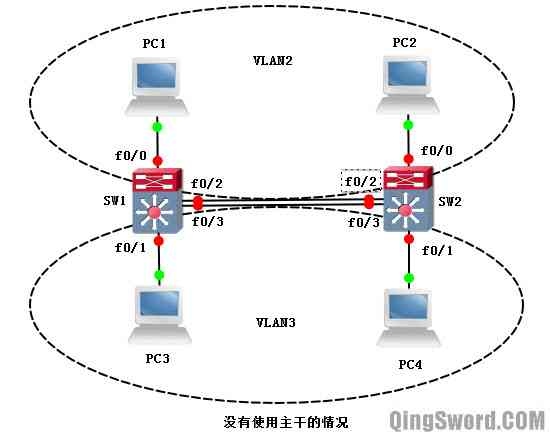
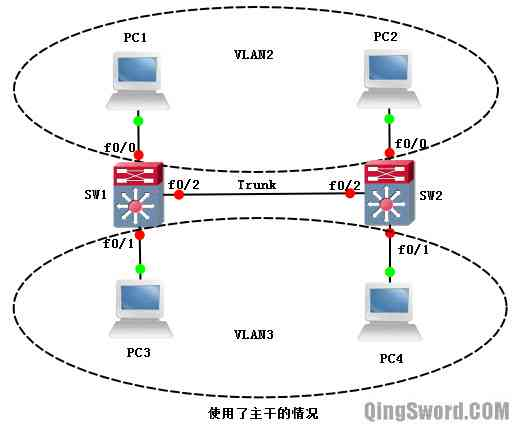
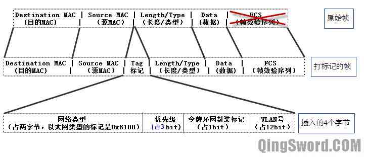
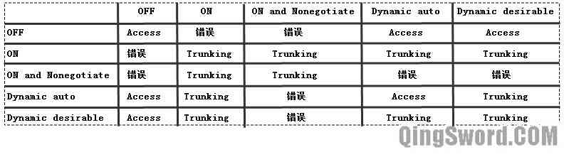
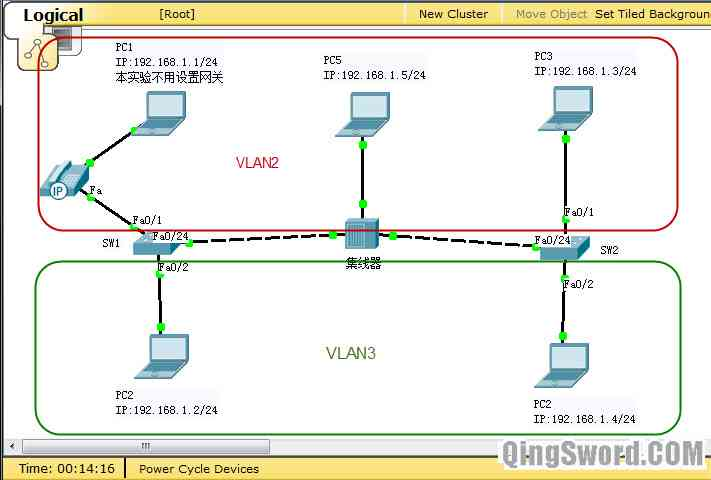
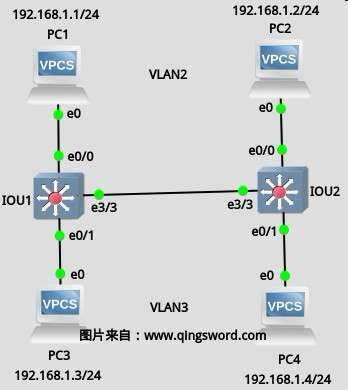
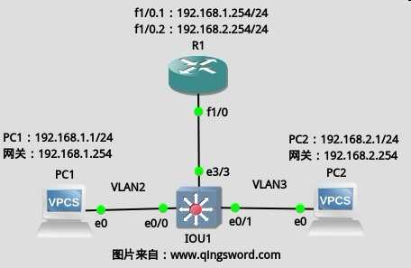
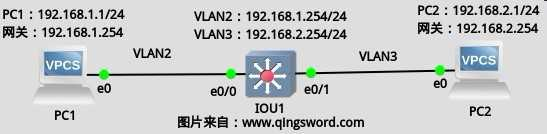

[CCNA图文笔记]-20-VLAN配置实例详解
引言
这篇文章介绍一下VLAN相关技术，通过几个实例来演示VLAN干线、VLAN的封装和工作方式、VLAN配置、VLAN间路由等。（本文中的大部分实验均可在思科模拟器"Cisco Packet Tracer"中完成）
文章目录
- 0×1.VLAN介绍
- 0×2.VLAN干线
- a.什么是VLAN干线
- b.干线协议介绍
- c.交换机间VLAN通信过程
- d.DTP协议
- 0×3.VLAN配置实例
- a.创建VLAN
- b.把端口加入VLAN
- c.配置主干端口(Trunk)
- d.本地VLAN
- e.语音VLAN
- f.VLAN维护操作
- g.在GNS3上模拟配置VLAN
- 0×4.VLAN间路由
- a.基于路由器物理接口的VLAN间路由
- b.基于路由器子接口的VLAN间路由（单臂路由）
- c.交换机上的端口类型
- d.基于三层交换机的VLAN间路由
- e.路由器和三层交换机在实现VLAN间路由上的区别
0×1.VLAN介绍
VLAN（Virtual Local Area Network，虚拟局域网）,通过在支持VLAN的交换机上添加VLAN，并且动态的调整每个端口所属VLAN（默认端口都属于VLAN1），实现一台物理交换机上可以有多个局域网（LAN），每个LAN称作VLAN，VLAN之间的广播互不可达，VLAN间互不影响；每个VLAN是一个独立的广播域，如果不同VLAN中的结点想要互相访问，需要通过一台三层或三层以上设备才能实现（比如路由器、三层交换机、防火墙等）；这样就增加了安全性，可以在三层设备上配置访问列表来控制流量。
0×2.VLAN干线
a.什么是VLAN干线
干线(Trunk)就是在两台交换机之间可以传输多个VLAN的信息的那条线缆，干线又称主干。
下图（图1）是没有使用干线的情况，在SW1和SW2上划分了两个VLAN（VLAN1、VLAN2），PC1和PC2属于VLAN2，PC3和PC4属于VLAN3，在没有使用主干线路的时候，需要在SW1和SW2之间使用两条线缆，将一条线缆的两个端口划分到VLAN2，另一条线缆的两个端口划分到VLAN3，这样PC1和PC2才能正常通信，PC3和PC4也能正常通信。在没有使用间路由的情况下，VLAN2中的PC1和PC2无法和VLAN3中的PC3和PC4通信：
下图（图2）是使用了主干线路的情况，只需要在SW1和SW2之间使用一条线缆，并且设置这条线缆为主干，这样这条主干线缆就能同时传输多个VLAN的数据了。PC1和PC2能正常通信，PC3和PC4也能正常通信。在没有使用间路由的情况下，VLAN2中的PC1和PC2无法和VLAN3中的PC3和PC4通信：
注意，现在只有100Mb/s以上（包括100Mb/s）的线路才支持Trunk。
b.干线协议介绍
对于VLAN交换机来说，干线就是交换机之间的连线，它在两个或两个以上的VLAN之间传输业务流。每个交换机必须确定它所收到的数据帧属于哪个VLAN。
在传统的交换机中，当一个帧进入交换机时，交换机只检查目的MAC，然后根据自己的MAC表进行转发或泛洪。在VLAN中除了需要知道目的MAC做转发决定外，还要考虑帧的源地址，因为帧的源地址通常会影响它所属VLAN，并可能影响它被转发出去的端口。追踪一个帧的源地址有两种常用的方式：
帧标记（又称显式标记）：根据数据进入交换机的端口属于哪个VLAN来标记一个帧。当一个帧进入交换机的时候，根据那个端口所属VLAN，为帧添加一个包含VLAN标识的域（VLAN着色），这种方式的缺点就是大多数不支持VLAN的设备会将这种更改后的帧当成无效帧丢弃。但现在这种技术已经形成了一个IEEE802.1Q的标准，这个标准解决了不同厂商进行帧标记时候的兼容性问题。
帧过滤（又称隐式标记）：这种方法为每个VLAN保持一张MAC地址表，确定目标后就做出转发决定。这种方式的好处就是不更改原来的帧格式，帧通过不同的网络设备都不会出现问题。这种方式的缺点就是每个VLAN交换机都要保存一张MAC地址表，这张表还要包含每个MAC所属VLAN的信息，并且能根据源地址的VLAN以及MAC进行过滤转发。
现阶段最常使用的干线协议是802.1Q和ISL（在不同厂商设备混用的情况下一定要使用802.1Q）。
802.1Q介绍：
802.1Q是IEEE提出的一个通用标准，也是现在大部分厂商的默认干线传输协议，通过在原来的以太网帧头部添加一个4字节的802.1Q头部，然后重新计算FCS（帧效验序列）来实现，如下图（图3）：
本文中的配置均以802.1Q为例。
ISL（Interior Switching Link，交换机间链路）是思科私有的干线传输协议，在多厂商混合设备的场景中并不常用，了解有这个协议即可。
c.交换机间VLAN通信过程
这一部分结合"什么是VLAN干线"中的图2，讲解一下802.1Q干线协议的工作流程。
图中PC1和PC2属于VLAN2，PC3和PC4属于VLAN3，SW1和SW2通过干线相连，干线运行的是802.1Q协议：
1）假设PC1发送消息给PC2，刚开始PC1不知道PC2的MAC地址，所以它首先发送ARP查询包，查询PC2的MAC地址，ARP查询包以广播形式发送。
2）交换机SW1收到PC1发送过来的ARP查询广播包，SW1知道数据是从fa0/0接收到的，fa0/0被划分到VLAN2中，是一个接入端口，SW1知道这是一个来自VLAN2的广播包，SW1在MAC地址表中加入PC1的MAC和VLAN号以及对应的端口号，非VLAN交换机和VLAN交换机都会根据数据的源地址进行学习，只不过VLAN交换机除了记录源MAC地址，还需要记录源MAC所对应的VLAN号。
3）SW1在收到的数据帧中加入VLAN2的标识（VLAN交换机从Access（接入）端口收到数据时需要插入VLAN标识），接着SW1将这个VLAN2的广播包从除接收端口以外的所有属于VLAN2的接口以及主干发送出去，在从所有属于VLAN2的接入接口发送出去前需要去掉VLAN标识（VLAN交换机从Access将数据发出时要去掉VLAN标识，否则其他计算机不能识别这个加了标识的帧），从主干发送出去的帧不需要去掉VLAN标识（后面介绍到的本地VLAN除外）。也就是说如果此时SW1上还有一个非主干端口也被分配到VLAN2中，这个广播从这接入端口送出前要去掉VLAN标识，而从SW1的fa0/2发往SW2的数据帧不需要去掉VLAN标识（本地VLAN除外）。
4）PC3接收不到PC1发出的ARP广播请求，因为连接PC3的端口被划分到VLAN3中了，不属于VLAN2，一个VLAN是一个广播域。
5）当SW2从自己的fa0/2接口（主干接口）接收到一个数据帧时，SW2查看数据帧中的VLAN标识，并在本地MAC地址表中添加了帧中源MAC地址、VLAN号以及对应的端口号fa0/2。接下来SW2将决定往哪转发这个收到的数据帧，SW2通过查看VLAN标识和目的MAC地址，知道这是一个VLAN2的广播ARP查询包，SW2将这个包从除接收接口（fa0/2）以外的所有属于VLAN2的接口以及其他的主干接口（如果有）发送出去，同理，在发出去之前，如果接口属于接入接口，则去掉VLAN标识，如果是主干端口则保留VLAN标识。
6）PC4是收不到这个广播包的，因为不属于VLAN2，这个时候PC2收到了这个ARP请求包，发现请求的是自己的MAC地址，PC2封装ARP应答包发给SW2。
7）SW2收到这个应答包，首先学习PC2的MAC地址和VLAN号以及对应端口到自己的MAC地址表，然后给这个数据帧添加VLAN2标识，之后SW2查询MAC地址表，找到PC1对应的MAC号、VLAN号和端口号，SW2比较数据帧的源MAC和目的MAC在同一个VLAN2中，SW2将数据帧从目的MAC对应的fa0/2接口发出（PC1的MAC是第5步中收到SW1发来的数据帧的时候记录的）。
8）SW1收到这个数据帧，首先也是对源MAC、VLAN号以及对应端口进行学习，然后查看数据帧中的目的MAC，之前已经保存过PC1的MAC，SW1将目的MAC所在VLAN号和源MAC所在VLAN号进行对比，发现他们处于同一个VLAN2下，SW2将这个数据帧中的VLAN标记去除并直接从目的MAC（PC1的MAC）所对应的端口fa0/0发给PC1。
9）PC1成功收到ARP应答包，接下来的通信过程和这个步骤类似。
总结：交换机何时添加802.1Q标签头（VLAN标签）与交换机的接口有关，如果交换机的接口是接入端口（access），一般用于连接计算机，在数据帧进入时被添加802.1Q标签头，数据帧从接入端口发出时去掉标签头；如果交换机的接口是主干接口(Trunk)，一般用于连接另外一台交换机或路由器，数据从这种接口发出一般不会去掉标签头（后面演示的Native VLAN除外）。
d.DTP协议
DTP（Dynamic Trunking Protocol，动态主干协议），是思科私有的协议，其它厂商不支持该协议，当交换机上某些端口被配置成主干模式时，DTP自动运行，用来协商链路能否成为主干链路。DTP支持802.1Q和ISL封装的主干链路协商。
下面是思科交换机端口的几种主干模式：
OFF(关闭)：使用"switchport mode access"命令，静态配置交换机端口为接入端口（非主干端口）。
ON（打开）：使用"switchport mode trunk"命令，静态配置交换机端口为主干端口。
Dynamic auto（动态自动）：使用"switchport mode dynamic auto"命令，静态配置交换机端口为动态自动模式。
Dynamic desirable（动态期望）：使用"switchport mode dynamic desirable"命令，静态配置交换机端口为动态期望模式。
Nonegotiate（关闭DTP协议）：使用"switchport nonegotiate"命令，将关闭DTP协议。
思科交换机的接口可以配置以上五种模式。下表显示了，交换机和交换机之间相连，在什么情况下能建立起主干链路，什么情况下不能建立起主干线路：
注：Access是链路通过DTP协议协商后成为了非主干链路；Trunking是指链路协商后成为了主干线路；错误是指有故障的链路，协商失败。
举一个例子：两台交换机相连，一端使用命令"switchport mode dynamic auto"，另外一端使用命令"switchport mode trunk",那么根据这张表，最后的协商结果就是Trunking,也就是成功协商成主干链路。后面"配置主干端口"会演示到DTP，这个表可以作为参考。
0×3.VLAN配置实例
这个实例的配置环境在"Cisco Packet Tracer 6.2"模拟器中进行（实验同样可以使用GNS3完成），实验拓扑如下：
"Cisco Packet Tracer 6.2"已经被我上传到云盘，有需要的可以[点击这里去下载]，安装后将其中的"Chinese.ptl"复制到安装目录language目录下，启动软件后在菜单的"Options"->"Preferences"中选择这个汉化包，可以将软件部分界面更改为中文，汉化并不完整，不过够用了。
五台计算机，子网24位，IP地址如图所示，其中PC1、PC2连接在SW1上，PC1和交换机之间还连接了一台IP电话，PC3、PC4连接在SW2上，PC5连接在一台集线器上，SW1和SW2也连接在这台集线器上，在没有划分VLAN前，整个网络属于同一个广播域，PC1-5互相能够ping通；现在要将PC1、PC3、PC5划分到VLAN2里面，将PC2、PC4划分到VLAN3里面，配置主干、本地VLAN、语音VLAN。（注意，交换机和集线器之间的连线需要使用交叉线，其他全部使用直通线；实验前需要将IP电话的电源线拖动到电源接口连接起来，点击IP电话就能看到IP电话的背板，将下面的电源线拖动到背板的圆形接口上即可完成连线；PC配置IP的方法就是点击PC图标选择Desktop，在里面可以看到一个IP设置选项，其中的"Command Prompt"就类似于电脑的cmd窗口）
a.创建VLAN
打开SW1和SW2的CLI界面(点击交换机图标,然后选择CLI,就可以输入命令了),首先创建VLAN2和VLAN3；
SW1配置：
Switch>en Switch#conf t Switch(config)#host SW1 SW1(config)#vlan 2 /*创建VLAN2*/ SW1(config-vlan)#name vlan2name /*给VLAN2命名*/ SW1(config-vlan)#vlan 3 /*创建VLAN3*/ SW1(config-vlan)#name vlan3name /*给VLAN3命名*/ SW1(config-vlan)#end SW1# /* * 查看VLAN信息，可以看到默认情况下所有端口都属于VLAN1， * VLAN1也是交换机上默认存在的VLAN。 * * 下面是我们新建的VLAN2和VLAN3。 * * VLAN1002-1005也是交换机上默认存在的VLAN，有特殊用途，这里暂且不用理会。 */ SW1#show vlan VLAN Name Status Ports ---- -------------------- ------- ------------------------------- 1 default active Fa0/1, Fa0/2, Fa0/3, Fa0/4 Fa0/5, Fa0/6, Fa0/7, Fa0/8 Fa0/9, Fa0/10, Fa0/11, Fa0/12 Fa0/13, Fa0/14, Fa0/15, Fa0/16 Fa0/17, Fa0/18, Fa0/19, Fa0/20 Fa0/21, Fa0/22, Fa0/23, Fa0/24 Gig1/1, Gig1/2 2 vlan2name active 3 vlan3name active 1002 fddi-default act/unsup 1003 token-ring-default act/unsup 1004 fddinet-default act/unsup 1005 trnet-default act/unsup
SW2配置：
Switch>en Switch#conf t Switch(config)#host SW2 SW2(config)#vlan 2 SW2(config-vlan)#name vlan2name SW2(config-vlan)#vlan 3 SW2(config-vlan)#name vlan3name SW2(config-vlan)#end
这样VLAN2和VLAN3就创建好了，继续下一步。
b.把端口加入VLAN
默认情况下所有端口都属于VLAN1，根据拓扑要求，我们需要调整SW1和SW2上的端口，在SW1上将和PC1相连的端口静态的分配给VLAN2，将于PC2相连的端口静态的分配给VLAN3，同理SW2上也要做出调整；
SW1配置：
SW1#conf t SW1(config)#int fa 0/1 /*进入和PC1相连的端口*/ /*交换机默认的端口模式是"Dynamic auto"，由于这个端口连接的是终端设备，所以要配置成接入接口*/ SW1(config-if)#switchport mode access SW1(config-if)#switchport access vlan 2 /*将这个接口划分到VLAN2*/ SW1(config-if)#int fa 0/2 /*进入和PC2相连的端口*/ SW1(config-if)#swi mod acc /*同上，这是简写形式*/ SW1(config-if)#swi acc vlan 3 SW1(config-if)#end SW1# /*查看VLAN分配情况，可以看到Fa0/1和Fa0/2被分配到了对应的VLAN下*/ SW1#show vlan brief VLAN Name Status Ports ---- -------------------- ------- ------------------------------- 1 default active Fa0/3, Fa0/4, Fa0/5, Fa0/6 Fa0/7, Fa0/8, Fa0/9, Fa0/10 Fa0/11, Fa0/12, Fa0/13, Fa0/14 Fa0/15, Fa0/16, Fa0/17, Fa0/18 Fa0/19, Fa0/20, Fa0/21, Fa0/22 Fa0/23, Fa0/24, Gig1/1, Gig1/2 2 vlan2name active Fa0/1 3 vlan3name active Fa0/2 1002 fddi-default active 1003 token-ring-default active 1004 fddinet-default active 1005 trnet-default active
SW2配置：
SW2#conf t SW2(config)#int fa 0/1 SW2(config-if)#swi mod acc SW2(config-if)#swi acc vlan 2 SW2(config-if)#int fa 0/2 SW2(config-if)#swi mod acc SW2(config-if)#swi acc vlan 3 SW2(config-if)#end
端口分配完毕后，在PC1上Ping拓扑中任意一台其他的PC，都Ping不通；PC1 ping不通PC2是因为他们不在一个VLAN中，ping不通其他几台是因为SW1的fa0/24端口默认属于VLAN1，并且是一个接入端口，该端口只转发VLAN1的数据包，而PC1在VLAN2中，所以ping不通。继续下一步，配置主干。
c.配置主干端口(Trunk)
在SW1和SW2上配置fa0/24为主干端口：
SW1配置：
SW1#conf t SW1(config)#int fa 0/24 /* * 配置主干模式，这种模式就是前面DTP协议协商图中的"ON and Nonegotiate"， * 交换机两端都配置成这种模式，协商的结果就是Trunking，即主干。 */ SW1(config-if)#switchport mode trunk SW1(config-if)#switchport nonegotiate /*配置主干允许传输的VLAN，用？查看一下可以执行的操作*/ SW1(config-if)#switchport trunk allowed vlan ? WORD VLAN IDs of the allowed VLANs when this port is in trunking mode add add VLANs to the current list all all VLANs except all VLANs except the following none no VLANs remove remove VLANs from the current list /* * 本例设置成允许所有VLAN的传输。 * 如果只允许VLAN1、3、1002-1005，可以像下面这样写， * switchport trunk allowed vlan 1,3,1002-1005 * 如果想追加新的VLAN2被允许可以这样写: * switchport trunk allowed vlan add 2 */ SW1(config-if)#switchport trunk allowed vlan all SW1(config-if)#end
SW2配置：
SW2(config)#int fa 0/24 /*SW2的fa0/24也配置成"ON and Nonegotiate"模式*/ SW2(config-if)#swi mod trunk SW2(config-if)#swi nonegotiate SW2(config-if)#swi trunk allowed vlan all SW2(config-if)#end
配置完成后在SW1上查看主干链路状态：
SW1#show interfaces fa 0/24 switchport Name: Fa0/24 Switchport: Enabled Administrative Mode: trunk /*配置的端口模式是主干*/ Operational Mode: trunk /*链路的状态是主干*/ Administrative Trunking Encapsulation: dot1q /*主干默认封装协议dot1q(802.1Q)*/ Operational Trunking Encapsulation: dot1q /*有效的封装协议也是dot1q*/ Negotiation of Trunking: Off /*DTP协议关闭*/ Access Mode VLAN: 1 (default) /*端口默认VLAN是VLAN1*/ Trunking Native Mode VLAN: 1 (default) /*该主干端口的本地VLAN是VLAN1*/ Voice VLAN: none /*没有配置语言VLAN*/
查看SW1工作在主干模式的端口：
SW1#show interfaces trunk /*端口 模式 封装协议 状态 本地VLAN号*/ Port Mode Encapsulation Status Native vlan Fa0/24 on 802.1q trunking 1 /*主干上允许传输的VLAN号*/ Port Vlans allowed on trunk Fa0/24 1-1005 Port Vlans allowed and active in management domain Fa0/24 1,2,3 Port Vlans in spanning tree forwarding state and not pruned Fa0/24 1,2,3
在这一步，大家可以使用DTP协议部分介绍的命令，将交换机两端的模式替换成协商表里面的其他模式，来测试DTP协议。
现在，再次测试Ping，PC1和PC3可以互相Ping通，PC2和PC4可以互相Ping通，但是PC1和PC3确Ping不通PC5，根据拓扑图，PC5也必须在VLAN2中，可以和PC1和PC3通信，是什么原因造成这一情况的呢？继续往下看。
Ps："Cisco Packet Tracer 6.2"不支持更改主干端口封装协议的命令，在真实交换机中可以通过下面的命令来更改主干端口的封装协议：
/*进入主干接口进行更改*/ Switch(config-if)#switchport trunk encapsulation ? dot1q ....../*802.1Q*/ isl ....../*思科私有的ISL*/ /*将主干端口的封装协议改成802.1Q*/ Switch(config-if)#switchport trunk encapsulation dot1q
d.本地VLAN
本地Vlan（Native Vlan）是主干端口的特征，使用802.1Q协议封装的主干端口，将数据帧从主干发出时，如果数据帧中的VLAN标识与主干端口的本地VLAN号一致，那么交换机清除数据帧中的VLAN标识，再从主干端口发出；使用802.1Q封装的主干端口，从主干端口接收到数据帧时，如果数据帧中没有VLAN标识，交换机将给这个数据帧添加接收这个帧的主干端口的本地VLAN号。
理解了上面主干端口本地VLAN的工作方式后，就可以解释上面的问题了，PC1属于VLAN2，PC1 ping PC5的时候，首先要获取PC5的MAC地址，ARP请求包被以广播的形式发送出去，交换机SW1在广播帧上添加VLAN2标识，然后从fa0/24发出，fa0/24是主干端口默认情况下该主干端口的默认本地VLAN号是1，和要发出去的数据帧中的VLAN号不一样，所以SW1不做任何修改，直接将这个数据帧从主干端口发出，由于PC5连接在集线器上，集线器收到这个数据帧后简单的放大信号，然后从除接收端口以外的所有端口发出，PC5收到这个数据帧，由于数据帧是添加了VLAN2标识的，PC5直接判断这是一个错误的帧，最后丢弃。
在这种情况下，如果想让PC1和PC3能够ping通PC5，其实可以将SW1和SW2的fa0/24这个主干端口的本地VLAN号改成VLAN2，这样根据上面所说的本地VLAN的工作原理，当SW1将VLAN2的数据帧从这个主干发出时，将去掉帧中的VLAN标记，那么PC5收到的就是一个正常的帧了。
SW1设置：
SW2(config)#int fa 0/24 /*将主干端口的本地VLAN改成VLAN2*/ SW2(config-if)#switchport trunk native vlan 2 SW2(config-if)#end
SW2设置：
SW1(config)#int fa 0/24 SW1(config-if)#switchport trunk native vlan 2 SW1(config-if)#end
现在再次测试PC1以及PC3 ping PC5，都能够成功Ping通。根据本地VLAN的工作原理，PC5去ping PC2和PC4是ping不通的，因为当SW1或SW2从自己的主干接收到一个没有打标记的VLAN帧后，它会给这个帧打上这个接收端口的本地VLAN标记，即VLAN2的标记，而PC2和PC4属于VLAN3，这个数据帧不会送给任何被划分到VLAN3的端口。
大家可能注意到拓扑图中SW1和PC1之间连接了一台IP电话，下面继续配置语音VLAN。
e.语音VLAN
IP语音电话需要带宽保证、优先传输、拥塞避免并且要求穿过整个网络的延时小于150毫秒，思科IP电话机一般有两个接口，一个接口可以接交换机，一个接口可以接PC，IP电话可以单独连接在交换机上，有时为了节约端口，可以连接IP电话后再连接计算机，本例就使用了这种方式。
下面简单的介绍一下VoIP的配置,在SW1上执行下面的命令：
/* * 在没有配置语音VLAN前，IP电话和PC1处于同一个VLAN2中， * Cisco交换机支持一种独特的功能， * 可以通过下面这条命令将IP电话和PC工作站划分到不同的VLAN中。 */ SW1(config)#int fa 0/1 SW1(config-if)#switchport voice vlan 50 SW1(config-if)#end /*查看交换接口参数，可以看到Vioce VLAN变成了50*/ SW1#show int fa 0/1 switchport Voice VLAN: 50
f.VLAN维护操作
可以在SW1上查看全局配置信息：
SW1#show running-config Building configuration... ! interface FastEthernet0/1 switchport access vlan 2 switchport mode access switchport voice vlan 50 ! interface FastEthernet0/2 switchport access vlan 3 switchport mode access ! .... ! interface FastEthernet0/24 switchport trunk native vlan 2 switchport mode trunk switchport nonegotiate ! ....
从上面的输出中我们发现，找不到VLAN的创建信息，这是因为VLAN的创建信息是被单独保存在vlan.dat文件中，可以使用下面的命令查看：
/* * dir命令可以查看此交换机的Flash空间中的文件， * 从命令的输出可以看到Flash空间中除了保存IOS外还保存了vlan.dat文件。 */ SW1#dir Directory of flash:/ 1 -rw- 4414921 c2960-lanbase-mz.122-25.FX.bin 2 -rw- 676 vlan.dat 64016384 bytes total (59600787 bytes free)
使用"show vlan brief"可以查看交换机上VLAN配置信息：
/* * 从配置信息可以看到，SW1上新建立了两个VLAN(vlan2和vlan3)， * 每个VLAN中还包含了一个端口，Fa0/24是主干端口，不属于任何VLAN。 */ SW1#show vlan brief VLAN Name Status Ports ---- --------------------- --------- ------------------------------- 1 default active Fa0/3, Fa0/4, Fa0/5, Fa0/6 Fa0/7, Fa0/8, Fa0/9, Fa0/10 Fa0/11, Fa0/12, Fa0/13, Fa0/14 Fa0/15, Fa0/16, Fa0/17, Fa0/18 Fa0/19, Fa0/20, Fa0/21, Fa0/22 Fa0/23, Gig1/1, Gig1/2 2 vlan2name active Fa0/1 3 vlan3name active Fa0/2 1002 fddi-default active 1003 token-ring-default active 1004 fddinet-default active 1005 trnet-default active
使用"reload"命令重启SW1:
SW1#reload Proceed with reload? [confirm] /*在真实交换机上还会出现下面的提示信息，输入no，不保存配置*/ System configuration has been modified. Save?[yes/no]:no
重启完成后再次查看VLAN配置：
/* * 从下面的输出可以看到，虽然没有保存配置文件，但是创建的VLAN还在， * 这是因为创建的VLAN信息是默认保存在Flash的vlan.dat里面的， * 但是端口的分配信息是保存在配置文件中的，所以端口分配信息丢失了。 */ Switch#show vlan brief VLAN Name Status Ports ---- --------------------- --------- ------------------------------- 1 default active Fa0/1, Fa0/2, Fa0/3, Fa0/4 Fa0/5, Fa0/6, Fa0/7, Fa0/8 Fa0/9, Fa0/10, Fa0/11, Fa0/12 Fa0/13, Fa0/14, Fa0/15, Fa0/16 Fa0/17, Fa0/18, Fa0/19, Fa0/20 Fa0/21, Fa0/22, Fa0/23, Fa0/24 Gig1/1, Gig1/2 2 vlan2name active 3 vlan3name active 1002 fddi-default active 1003 token-ring-default active 1004 fddinet-default active 1005 trnet-default active
其实vlan.dat文件中不仅仅包含了VLAN信息，还包含了VTP信息（下一篇文章中将会讲到），可以通过下面这条命令删除vlan.dat文件：
Switch#delete vlan.dat Delete filename [vlan.dat]? /*回车确定*/ Delete flash:/vlan.dat? [confirm]
重启后再次"show vlan brief"就看不到我们创建的VLAN信息了。
g.在GNS3上模拟配置VLAN
首先打开VMware中的IOU虚拟机，打开GNS3搭建下面的拓扑图，PC1-4是VPCS虚拟终端，IOU1-2是IOU虚拟机中运行的交换机，PC1和PC2被划分到VLAN2中，PC3和PC4被划分到VLAN3中，IOU交换机之间的连线被配置成主干，设备间连线和IP地址如下图所示： PC1-4配置：
/*这里仅给出PC1的配置，请参考上图配置其他VPCS*/ VPCS> set pcname PC1 PC1> ip 192.168.1.1/24
IOU1配置：
/*GNS3中的配置与Cisco Packet Tracer基本一致，唯一不同的是，IOU中的交换机IOS支持encapsulation命令，而真实环境中也必须在主干两段配置这个命令*/ IOU1#conf t IOU1(config)#host SW1 SW1(config)#vlan 2 SW1(config-vlan)#name vlan2 SW1(config-vlan)#vlan 3 SW1(config-vlan)#name vlan3 SW1(config-vlan)#int e0/0 SW1(config-if)#swi mod acc SW1(config-if)#swi acc vlan 2 SW1(config-if)#int e0/1 SW1(config-if)#swi mod acc SW1(config-if)#swi acc vlan 3 SW1(config-if)#int e3/3 SW1(config-if)#swi mod trunk /*更改主干线路封装协议为802.1Q*/ SW1(config-if)#swi trunk encapsulation dot1q SW1(config-if)#swi trunk allowed vlan all SW1(config-if)#end
IOU2配置：
IOU2#conf t IOU2(config)#host SW2 SW2(config)#int e0/0 SW2(config-if)#exit SW2(config)#vlan 2 SW2(config-vlan)#name vlan2 SW2(config-vlan)#vlan 3 SW2(config-vlan)#name vlan3 SW2(config-vlan)#int e0/0 SW2(config-if)#swi mod acc SW2(config-if)#swi acc vlan 2 SW2(config-if)#int e0/1 SW2(config-if)#swi mod acc SW2(config-if)#swi acc vlan 3 SW2(config-if)#int e3/3 SW2(config-if)#swi mod tr SW2(config-if)#swi tr enc dot1q SW2(config-if)#swi tr allow vlan all SW2(config-if)#end
配置完成后，PC1能Ping通PC2，PC3能够Ping通PC4，Vlan各维护命令与"Cisco Packet Tracer"中的一致，这里不再赘述。
0×4.VLAN间路由
在上面的试验中VLAN之间是不能互访的，VLAN间的互访需要借助路由器或三层交换机来实现。
a.基于路由器物理接口的VLAN间路由
使用GNS3搭建下面的拓扑：

PC1-2是VPCS模拟的计算机，R1是GNS3中运行的c3640交换机，IOU是IOU虚拟机中运行的交换机，PC1被划分到VLAN2中，PC2被划分到VLAN3中，交换机的e3/3和e3/2接口也分别被划分到这两个VLAN中，设备连线与IP如上图所示。
PC1-2配置：
VPCS> set pcname PC1 PC1> ip 192.168.1.1/24 192.168.1.254 VPCS> set pcname PC2 PC2> ip 192.168.2.1/24 192.168.2.254
IOU配置：
IOU1#conf t IOU1(config)#vlan 2 IOU1(config-vlan)#name vlan2 IOU1(config-vlan)#vlan 3 IOU1(config-vlan)#name vlan3 IOU1(config-vlan)#int e0/0 IOU1(config-if)#swi mod acc IOU1(config-if)#swi acc vlan 2 IOU1(config-if)#int e 0/1 IOU1(config-if)#swi mod acc IOU1(config-if)#swi acc vlan 3 IOU1(config-if)#int e3/3 IOU1(config-if)#swi mod acc IOU1(config-if)#swi acc vlan 2 IOU1(config-if)#int e3/2 IOU1(config-if)#swi mod acc IOU1(config-if)#swi acc vlan 3 IOU1(config-if)#end
R1配置：
R1#conf t R1(config)#int fa 1/0 R1(config-if)#ip add 192.168.1.254 255.255.255.0 R1(config-if)#no shut R1(config-if)#int fa 2/0 R1(config-if)#ip add 192.168.2.254 255.255.255.0 R1(config-if)#no shut R1(config-if)#end
配置完成后在PC1上可以Ping通PC2，VLAN2和VLAN3通信成功。
b.基于路由器子接口的VLAN间路由（单臂路由）
在上面的实例中，如果使用路由的物理接口来配置，那么交换机上有多少个VLAN就需要在路由器上配置多少个物理接口来实现VLAN间的互访，这样成本很高。现实中一般使用"单臂路由"的形式，也就是使用路由器接口的子接口来实现VLAN间的互访，现在将上面的实验中的设备全部停止，删除R1和IOU之间的连线，重新连接如下图所示，路由器R1的fa1/0接口上配置两个子接口分别作为VLAN2和VLAN3的网关，IOU的e3/3接口需要配置成主干：
PC1-2配置：
VPCS> set pcname PC1 PC1> ip 192.168.1.1/24 192.168.1.254 VPCS> set pcname PC2 PC2> ip 192.168.2.1/24 192.168.2.254
R1配置：
R1>en R1#conf t R1(config)#int fa 1/0 /*父接口只需要打开即可*/ R1(config-if)#no shut /*创建子接口*/ R1(config-if)#int fa 1/0.1 /* * 子接口封装模式要和SW1的主干封装模式（dot1Q）一致， * 在dot1Q后面的数字要和VLAN号对应，这个子接口是连接VLAN2的，所以这里是2。 */ R1(config-subif)#encapsulation dot1Q 2 R1(config-subif)#ip add 192.168.1.254 255.255.255.0 R1(config-subif)#no shut R1(config-subif)#int fa 1/0.2 R1(config-subif)#enc dot1Q 3 R1(config-subif)#ip add 192.168.2.254 255.255.255.0 R1(config-subif)#no shut R1(config-subif)#end
IOU配置：
IOU1#conf t IOU1(config)#host SW1 SW1(config)#vlan 2 SW1(config-vlan)#name vlan2 SW1(config-vlan)#vlan 3 SW1(config-vlan)#name vlan3 SW1(config-vlan)#int e0/0 SW1(config-if)#swi mod acc SW1(config-if)#swi acc vlan 2 SW1(config-if)#int e0/1 SW1(config-if)#swi mod acc SW1(config-if)#swi acc vlan 3 SW1(config-if)#int e3/3 SW1(config-if)#swi mod trunk SW1(config-if)#swi trunk enc dot1q SW1(config-if)#swi trunk allow vlan all SW1(config-if)#end
注意，请先配置R1再配置IOU的e3/3接口为主干，否则很有可能不能完成主干链路的协商导致通信失败。
配置完成后PC1和PC2能正常通信。
c.交换机上的端口类型
思科交换机有三种类型的端口：交换端口(Switchport)、路由端口（No Switchport）和SVI端口（Switch Virtual Interface，交换虚拟端口）。
二层交换机的端口类型：
交换端口：二层交换机上的物理接口就是一个二层的交换端口。
SVI端口：二层交换机也可以被配置一个IP地址，来实现对交换机的远程管理。
在上面的单臂路由实例中，可以给SW1配置一个SVI端口用于远程管理：
/*给SW1配置一个用来网管的IP地址*/ SW1(config)#int vlan 2 SW1(config-if)#ip add 192.168.1.200 255.255.255.0 SW1(config-if)#no shut /*打开此SVI接口*/ SW1(config-if)#exit /*配置网关指向R1的子接口*/ SW1(config)#ip default-gateway 192.168.1.254 /*配置vty及特权密码*/ SW1(config)#line vty 0 4 SW1(config-line)#pass 123 SW1(config-line)#login SW1(config-line)#exit SW1(config)#enab sec 123 SW1(config)#end
这样PC1和PC2以及R1均可以使用这个IP地址(192.168.1.200)对SW1进行远程管理，读者可以尝试着在R1上telnet这个地址。在单臂路由的环境中，交换机的网关地址可以配置在任何一个VLAN的SVI上，但必须满足两个条件：
第一：这个VLAN必须在间路由上有子接口（或物理接口）作为网关。
第二：只有最小的激活SVI端口（no shut）是有效的。
本例中，可以将SVI配置在VLAN3上，但是必须关闭刚才配置的VLAN2的SVI，如果不关闭VLAN2的SVI，那么只有VLAN2的SVI会被使用：
/*删除之前配置的默认网关*/ SW1(config)#no ip default-gateway 192.168.1.254 SW1(config)#int vlan 2 /*关闭vlan2*/ SW1(config-if)#shut SW1(config-if)#int vlan 3 /*将网管IP配置在VLAN3上*/ SW1(config-if)#ip add 192.168.2.200 255.255.255.0 SW1(config-if)#no shut SW1(config-if)#exit /*配置在哪个VLAN上默认网关就要指向那个VLAN的网关*/ SW1(config)#ip default-gateway 192.168.2.254 SW1(config)#end
三层交换机的端口类型：
三层交换机除了支持二层交换机的"交换端口"、"SVI端口"之外，还支持"路由端口"，可以使用下面的命令将一台三层交换机的某个端口转变成"路由端口"：
SW1(config)#int e2/2 /*在没有被配置成路由接口以前，配置IP会出现错误提示*/ SW1(config-if)#ip add 192.168.22.22 255.255.255.0 % IP addresses may not be configured on L2 links. /*用下面的命令将接口变成路由接口*/ SW1(config-if)#no switchport /*之后就能配置IP地址了就和路由接口一样*/ SW1(config-if)#ip add 192.168.22.22 255.255.255.0 SW1(config-if)#no shut /*可以使用下面的命令将3层接口再转换成2层接口*/ SW1(config)#int e2/2 SW1(config-if)#switchport SW1(config-if)#end
路由端口虽然可以配置IP地址，具有三层接口的特性，但同时也失去了二层接口的特性，比如端口安全等。
d.基于三层交换机的VLAN间路由
基于三层交换机的VLAN间路由实际上就是利用三层交换机的SVI作为每个VLAN的网关。如下图所示，IOU1是一台三层交换机，在它上面启用了对应每个VLAN号的SVI接口：
IOU1配置：
IOU1#conf t IOU1(config)#host SW1 SW1(config)#vlan 2 SW1(config-vlan)#name vlan2 SW1(config-vlan)#vlan 3 SW1(config-vlan)#name vlan3 SW1(config-vlan)#int e0/0 SW1(config-if)#swi mod acc SW1(config-if)#swi acc vlan 2 SW1(config-if)#int e0/1 SW1(config-if)#swi mod acc SW1(config-if)#swi acc vlan 3 /*配置对应VLAN号的SVI端口*/ SW1(config-if)#int vlan 2 SW1(config-if)#ip add 192.168.1.254 255.255.255.0 SW1(config-if)#no shut SW1(config-if)#int vlan 3 SW1(config-if)#ip add 192.168.2.254 255.255.255.0 SW1(config-if)#no shut SW1(config-if)#end
三层交换机的VLAN间路由配置是最简单的，注意SVI端口号和VLAN号对应就可以了，配置完成后PC1能Ping通PC2。到此VLAN间路由配置的三种方法介绍完毕。
e.路由器和三层交换机在实现VLAN间路由上的区别
在前面两个基于路由器的VLAN间路由上，不同VLAN间的通信都要经过路由器，而经过路由器的延时比经过交换机的延时大，因为路由器比交换机处理过程复杂（对每个数据帧都得解封装-查询路由表-再封装）；其次就是路由和交换机之间的线路会成为瓶颈。
而在基于三层交换机的VLAN间路由上，首先不存在线路瓶颈，因为在交换机内部，交换机的背板带宽可以上几十GB甚至TB；其次假设VLAN2中的PC1要和VLAN3中的PC2进行通信，PC1将数据包发给三层交换机上的SVI端口，三层交换机知道这是一个VLAN间的通信，三层交换机将数据包通过背板电路发给路由模块，路由模块解封装查询路由表，然后再次封装发给交换模块，交换模块查询MAC表最后封装成帧，从对应接口发出去。后面相同目的地的数据包直接查询缓存进行转发，而不发往路由模块（一次路由，多次交换），这就大大提高了转发速度。